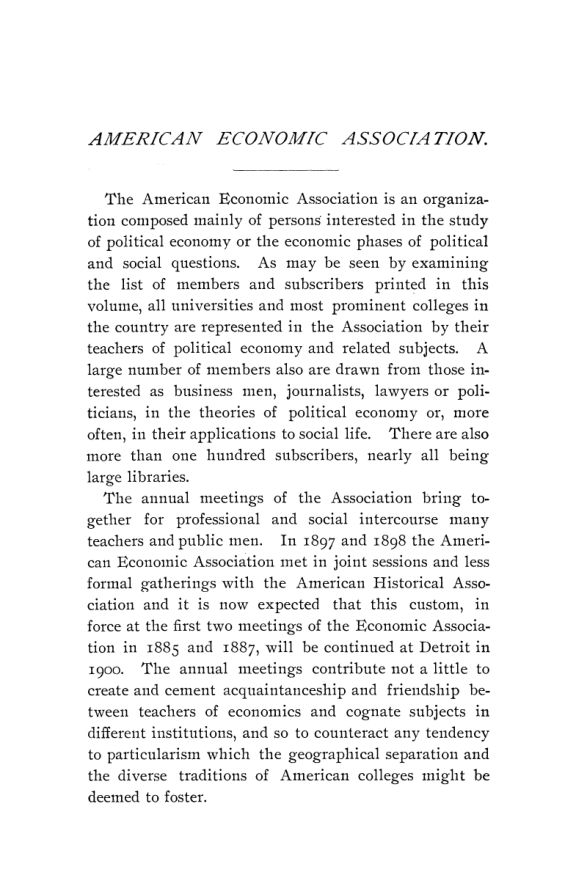

Ithaca, 1899: o truste, o especulador e a moral do economista
Leitura: 11 min
Cornell, dezembro de 1899: como se montava um truste, se ele era seleção natural ou perigo, quem paga a obra pública e se o economista fala pelo país ou por uma classe.


Na manhã de 28 de dezembro de 1899, em Ithaca, a American Economic Association dedicou uma sessão inteira a um tema que o programa anunciava entre parênteses: combinações ou trustes. Charles S. Fairchild abriu explicando como se financia um truste a partir de um exemplo rural. Alguns fazendeiros donos de leiterias concluem que fabricar e vender manteiga e queijo juntos rende mais do que cada um na sua fazenda. Às vezes a ideia vem de quem quer o emprego de gerente da fábrica; às vezes, da conversa entre eles. No primeiro caso há um promotor; no segundo, não.
A tese de Fairchild era que o grande truste industrial não passava de uma queijaria cooperativa com mais papelada. O que o distinguia, dizia, era imposto pelas leis estaduais das sociedades anônimas, pela necessidade de levantar dinheiro e pela conveniência de dividir os lucros em títulos que pudessem ser vendidos ou deixados aos herdeiros. Na substância, nenhuma diferença. Os dois outros expositores da manhã, Sidney Sherwood e James B. Dill, e a dezena de economistas que falaram depois, discordaram em quase tudo, menos num ponto: o truste viera para ficar.
Como se montava um truste em 1899?
Fairchild descreveu a operação passo a passo, com um promotor fictício, John Doe. Doe obtém opções de compra sobre dez fábricas e propõe uma nova companhia com capital de US$ 20 milhões, metade em ações preferenciais e metade em ordinárias. Um banco forma um sindicato de subscrição que paga em dinheiro pelas preferenciais e recebe de bônus a mesma quantidade em ordinárias. Os antigos donos recebem parte em ações e parte em dinheiro; outra parte do dinheiro fica no caixa como capital de giro, para que a empresa não dependa mais de descontar seus títulos, alívio que, segundo Fairchild, atraía muitos fabricantes para as fusões.
A regra prática, segundo Fairchild, era limitar as preferenciais ao valor dos ativos tangíveis e deixar às ordinárias o goodwill, os lucros esperados e as despesas de promoção. Num caso que ele considerou conservador, o goodwill foi avaliado em cinco vezes o lucro que excedia 7% sobre o capital empregado, descontadas comissões sobre vendas e depreciação. Noutro, o prospecto nem mencionava lucros passados e supunha um preço de venda igual ao dobro do custo; a emissão não encontrou compradores. Fairchild via uma vantagem nas fusões recentes: quase nenhuma emitira debêntures, e por isso a próxima depressão não traria a safra de reorganizações que as ferrovias conheceram.
O truste era seleção natural ou perigo público?
Sherwood, da Johns Hopkins, fez a defesa mais franca. A frase de Mill de que a indústria é limitada pelo capital teria perdido o sentido; o limite agora era a capacidade de organização do empresário. As depressões longas seriam obra do empresário fraco que, com muito capital nas mãos, mergulha às cegas na linha errada de produção e arrasta os outros. A formação de trustes seria um processo de seleção natural da mais alta ordem, e o único monopólio duradouro seria o da habilidade gerencial, temporário por natureza.
“A real função do truste é livrar-se do empresário fraco.” (“The real function of the trust is to get rid of the weak entrepreneur.”)
Sherwood não pedia ausência de Estado. Onde houvesse monopólio permanente, queria supervisão, regulação de preço ou tributação de parte do lucro. Para as combinações interestaduais, sugeria uma lei federal nos moldes do National Bank Act e um Departamento de Comércio e Manufaturas que registrasse, inspecionasse e publicasse. A lei do comércio interestadual, a seu ver, errara ao proibir o pooling das ferrovias em vez de mandar a comissão regulá-lo. No debate, resumiu a posição: não se dizia otimista, mas fatalista.
James B. Dill, advogado de sociedades anônimas, apontou quatro tendências que poderiam tornar-se perigosas: capitalização excessiva, fuga da publicidade, legislação feita para dispensar as companhias de prestar contas e especulação dos diretores com as ações da própria empresa. A raiz estaria no promotor e no financista, sobretudo nas comissões secretas pagas a quem empresta nome ou balcão a uma emissão. Uma companhia de milhões, dizia, podia ser organizada por pouco dinheiro e ter as ações emitidas a portas fechadas:
“não ‘dois por um’, mas literalmente ‘milhões por nada’” (“not issuing ‘two for one’ but literally ‘millions for nothing’”)
O remédio de Dill não era a lei dura, que ele chamava de histérica, mas uma lei de sociedades de alto padrão, voluntária, como a dos bancos nacionais: quem aceitasse prestar contas ganharia imunidades. Comparou com o trem. Ia-se de Nova York a Chicago por US$ 10 ou por US$ 35, e ninguém precisava de lei para que os passageiros de posses escolhessem o expresso; bastava não querer ser visto no trem dos imigrantes.
O debate mostrou as falhas dos dois lados. Jeremiah W. Jenks notou que Dill falara dos dois lados: se os trustes baixavam preços, não havia monopólio; se pagavam dividendos sobre capital inflado subindo preços ou cortando salários, havia. T. N. Carver separou o talento de produzir barato do talento de afastar rivais por estratégia e discriminação, e temeu que o truste premiasse o segundo. E. W. Bemis lembrou que nem das ferrovias se conseguia publicidade real. Davis R. Dewey e Samuel M. Lindsay perguntaram o que sobraria aos jovens sem empresa própria, e de onde sairiam os gênios de amanhã.
O economista fala pelo país ou por uma classe?
O discurso presidencial de Arthur T. Hadley, de Yale, deu a moldura moral da semana. Hadley separou a teoria da distribuição, que pode ser observada com a frieza do físico, da teoria da prosperidade, que julga o bem da nação inteira e por isso se mistura com ética e política. A concorrência, disse, não é luta entre classes, mas dentro de cada classe. Dois gatos que disputam o mesmo pássaro pioram a sorte do pássaro; dois patrões que disputam o mesmo operário melhoram a do operário.
A mesma lógica valia para o parlamento. Os legislativos tinham deixado de ser lugar de debate sobre o interesse comum para virar mesa de negociação de interesses locais, e a imprensa tomara seu lugar na formação da opinião. Hadley chamou isso de o maior mal da máquina política americana:
“a substituição da convicção pelo compromisso como ideal da atividade legislativa” (“substitution of compromise for conviction as the ideal of legislative activity”)
A ponte com a manhã seguinte estava no próprio discurso. Para Hadley, os negócios tinham virado um truste no sentido original da palavra: uma delegação de poder do público a poucas pessoas, que podiam abusar dele sem castigo imediato do mercado ou da lei. Com o império colonial, o mesmo valia para o cargo público. O economista deveria ser o representante do interesse permanente de toda a comunidade.
John R. Commons discordou de frente. Os economistas, disse, tiveram mais influência quando ajudaram uma classe em ascensão, como os clássicos ingleses de 1815 a 1845; o regime representativo se degradara não por representar classes, mas por ter deixado de representá-las. Quem representaria o todo seriam os economistas associados, não o economista individual. E. R. A. Seligman respondeu que, se isso fosse verdade, seria fatal para a ciência. H. H. Powers perguntou se votar pela licença dos bares fazia dele representante dos donos de bar.
O que mais passou pela pauta de Ithaca?
Na tarde do primeiro dia, Richard T. Ely resgatou a teoria do monopólio de Nassau Senior, que nos anos 1830 já via monopólio em quatro dos cinco casos de produção que distinguia. Henry C. Emery perguntou onde cabe o lucro do especulador numa teoria da distribuição feita de salários, juros e lucros. E. Dana Durand atacou o hábito das grandes cidades de financiar com dívida obras que, somadas, se repetiam ano após ano com regularidade.
A sessão ferroviária tratou de gente e de contratos. W. H. Baldwin Jr., presidente da Long Island Railroad, descreveu as associações de socorro e seguro dos ferroviários, criadas primeiro pelos próprios empregados e só depois pelas companhias. B. H. Meyer mostrou cartas de concessão escritas ao acaso; Henry C. Adams listou o que uma lei de pools teria de conter. Na sexta-feira, John Graham Brooks apresentou o selo da Consumers' League contra o sweatshop, Walter F. Willcox explicou o censo de 1900 e uma comissão propôs princípios para as finanças das novas colônias.
Por que este número inaugura uma série?
Porque o Conselho decidiu, em Ithaca, encerrar os Economic Studies e começar uma publicação trimestral com o antigo nome, Publications of the American Economic Association, abrindo cada ano com as atas da reunião. Este é o primeiro número da terceira série. O Conselho também elegeu Ely presidente, marcou a reunião seguinte para Detroit, se a American Historical Association fosse para lá, e autorizou comissões sobre a condição econômica do negro americano e sobre a economia da agricultura.
Na minha leitura
Na minha leitura, a pergunta mais útil da manhã foi a de Jenks, e ninguém a respondeu. Se o truste vence por eficiência, não precisa de regulação especial; se vence por poder de mercado, a eficiência do gestor deixa de ser prova de mérito. Sherwood descreveu o primeiro caso, Dill e Carver temiam o segundo, e o debate terminou sem um teste para distinguir um do outro. Essa continua sendo a pergunta central de toda política de concorrência: não se a empresa é grande, mas por que é grande e o que faz com isso.
O ponto em que todos convergiram foi a publicidade, e ele é menos modesto do que parece. Dill, um advogado de corporações, e Bemis, um crítico delas, concordavam que sem números públicos não há opinião pública que valha. Mas Bemis mostrou o limite: nem a melhor comissão ferroviária do país publicava as tarifas que de fato se cobravam. Transparência que depende da boa vontade de quem é regulado tende a ser decorativa. A proposta voluntária de Dill funciona para separar as boas empresas das ruins; não funciona para disciplinar as que não querem ser vistas.
Glossário
- truste
- combinação de empresas sob controle comum, por fusão, holding ou acordo, para reduzir a concorrência entre elas ou ganhar escala.
- promotor
- quem organiza a fusão: obtém opções sobre as empresas, monta a nova companhia e é pago, em geral, com ações.
- sindicato de subscrição
- grupo de bancos e investidores que garante a compra de uma emissão de títulos antes de oferecê-la ao público.
- ação preferencial
- ação com prioridade no dividendo e, muitas vezes, no ativo em caso de liquidação, em geral sem voto.
- goodwill
- valor atribuído à clientela, à marca e aos lucros esperados, além dos ativos físicos.
- capitalização excessiva
- emissão de ações em valor nominal muito superior ao dos ativos e da capacidade de lucro da empresa.
- pool
- acordo entre ferrovias para dividir tráfego ou receitas, então proibido pela lei do comércio interestadual de 1887.
- fundo de amortização
- reserva formada com receitas correntes para resgatar a dívida no vencimento (sinking fund).
- sweatshop
- oficina ou cortiço onde se costurava por empreitada, com jornadas longas e sem fiscalização.
- carta de concessão (charter)
- lei ou ato que autoriza uma companhia ferroviária a existir, construir e operar.
Artigos desta edição
- Economic Theory and Political Morality — Arthur T. Hadley (Yale University); discurso presidencial (pp. 45–61). Hadley distingue a teoria da distribuição, que o economista pode tratar como observador neutro, da teoria da prosperidade, que julga o bem da nação e se mistura com ética e política. Responde a três objeções à ideia do economista como representante do interesse geral: má psicologia, má política e má ética. A concorrência, diz, é conflito dentro das classes, não entre elas; o parlamento valeu como lugar de debate, não de barganha. Com trustes e colônias, a confiança delegada cresce, e o economista deve representar nada menos que a verdade inteira. JSTOR
- Discussion of the President's Address — John R. Commons (Bureau of Economic Research, Nova York), E. R. A. Seligman (Columbia University), L. M. Keasbey (Bryn Mawr College), E. W. Bemis, Richmond Mayo-Smith, H. H. Powers e resposta de Hadley (pp. 62–88 e 287–288). Commons sustenta que o economista só influencia a lei quando suas ideias coincidem com o interesse de uma classe, e que o regime representativo decaiu por deixar de representar classes. Seligman vê nisso uma ameaça à ciência; Bemis tenta conciliar; Mayo-Smith cita Mill e Lassalle; Powers pergunta se votar pela licença dos bares o torna representante dos donos de bar. Hadley encerra opondo governo pela opinião pública a governo de classe. A intervenção de Keasbey, que separa o economista como cientista do economista como homem, saiu no fim do volume, nas pp. 287–288, o que explica a paginação do registro. JSTOR
- Senior's Theory of Monopoly — Richard T. Ely (University of Wisconsin) (pp. 89–102). Ely resgata Nassau Senior como antecipador da teoria moderna do valor e do monopólio. Escrevendo nos anos 1830, Senior classificou quatro tipos de monopólio, da patente de Arkwright ao vinho de Constantia e à terra, e admitiu ausência de monopólio em só um dos cinco casos de produção que distinguia. Mas, ao tratar do lucro, recuou das próprias conclusões e não as levou à prática. Ely explica o recuo pela ideia de Senior de que a ciência não deve aconselhar e por seu temperamento: a economia teria sido para ele um manto, vestido por conveniência e depois posto de lado. JSTOR
- The Place of the Speculator in the Theory of Distribution — Henry C. Emery (Bowdoin College); debate com Stuart Wood, T. N. Carver, F. H. Giddings, A. T. Hadley, J. R. Commons e W. Z. Ripley (pp. 103–122). Emery separa os riscos da produção dos riscos especulativos, que vêm das oscilações contínuas de preço de todo o mercado e sustentam uma classe de especuladores puros. O ganho do especulador não seria uma parcela coordenada do produto anual, ao lado de salários, juros e lucros, mas uma mudança no valor relativo de um estoque existente. Wood vê no lucro um pagamento por conhecimento e chama os amadores de cordeiros, feitos para a tosquia. Carver responde que o especulador produz utilidade de tempo, como quem guarda gelo do inverno para o verão; Giddings prefere tratá-lo na teoria do consumo. JSTOR
- Taxation as a Partial Substitute for Borrowing to Cover the Cost of Permanent Municipal Improvements — E. Dana Durand (Stanford University); debate com J. H. Hollander e E. R. A. Seligman (pp. 123–148). Durand argumenta que, numa grande cidade, as obras permanentes somadas se repetem com regularidade e devem ser pagas em boa parte com receita corrente. Mede a variação anual das emissões em relação às médias de cinco anos em Nova York, Boston, Baltimore, Berlim e Londres. Endividar-se sem parar, diz, é injusto com o contribuinte futuro e caro: em 1897, juros e amortização tomavam mais de um quarto da despesa de Nova York. Propõe um imposto fixo por cinco anos para obras, com títulos de curto prazo para cobrir oscilações. Hollander defende discrição em vez de regra; Seligman busca um meio-termo. JSTOR
- The Financiering of Trusts — Charles S. Fairchild (pp. 149–162). Fairchild descreve a montagem de um truste como uma queijaria cooperativa ampliada. Com um promotor fictício, John Doe, mostra opções de compra sobre dez fábricas, sindicato de subscrição, ações preferenciais com bônus em ordinárias e capital de giro deixado no caixa; no fim, o promotor fica com 14.950 ações ordinárias. As preferenciais deveriam cobrir os ativos tangíveis e as ordinárias, o goodwill. Fairchild elogia a ausência de debêntures nas fusões recentes, que pouparia reorganizações na próxima depressão, e anexa uma tabela de títulos emitidos por grandes companhias industriais. JSTOR
- Influence of the Trust in the Development of Undertaking Genius — Sidney Sherwood (Johns Hopkins University) (pp. 163–176). Para Sherwood, a indústria passou a ser limitada pela capacidade de organização do empresário, não pelo capital, e o truste é um processo de seleção que põe os mais capazes no comando e elimina o empresário fraco. O único monopólio duradouro seria o da habilidade, temporário por natureza. Num trecho não lido na reunião (pp. 167–173), percorre a história do monopólio temporário como estímulo à concorrência, da terra à patente, e propõe uma lei federal no modelo dos bancos nacionais e um Departamento de Comércio e Manufaturas. Fraudes e corrupção seriam males da fase pioneira, como nas ferrovias. JSTOR
- Some Tendencies in Combinations Which May Become Dangerous — James B. Dill; debate com E. W. Bemis, J. W. Jenks, S. M. Lindsay, Gray, T. N. Carver, F. H. Giddings, Theodore Marburg, D. R. Dewey, Gardner, Sidney Sherwood e Allen Ripley Foote (pp. 177–211). Dill aponta quatro tendências perigosas em parte das combinações: capitalização excessiva, fuga da publicidade, legislação evasiva e especulação dos diretores com as próprias ações. Critica as comissões secretas a promotores e financistas, compara a capitalização inflada à moeda depreciada e propõe uma lei voluntária de alto padrão, como a dos bancos nacionais. No debate, Jenks pergunta se há ou não monopólio; Carver teme o talento estratégico; Marburg quer partilhar com o governo o lucro acima de certa taxa; Dewey pensa nos jovens; Sherwood se declara fatalista e diz que a publicidade vem primeiro. JSTOR
- Railroad Relief and Beneficiary Associations — W. H. Baldwin Jr. (presidente da Long Island Railroad) (pp. 212–230). Baldwin conta que o seguro e o socorro dos ferroviários nasceram nas irmandades dos próprios empregados, quase vinte anos antes de as companhias agirem; a primeira associação patronal foi a da Baltimore & Ohio, em 1880. Pelos dados da Interstate Commerce Commission para 1898, 3,5% dos 823.476 ferroviários morreram ou se feriram no ano. Detalha o fundo voluntário da Pennsylvania, com comitê paritário e garantia da empresa. Na parte final, defende que salários de ferrovia, serviço público, sejam discutidos com publicidade total diante do público, o júri final. JSTOR
- Railway Charters — B. H. Meyer (University of Wisconsin) (pp. 231–244). Meyer descreve a lenta passagem das cartas especiais às leis gerais de incorporação, com cartas especiais concedidas mesmo depois de proibidas; um grande sistema ferroviário operava sob carta dada para uma linha local nunca construída. As cartas do Oeste eram mais frouxas, às vezes com quatro a doze seções, contra vinte a quarenta nas melhores do Leste, e o capital não guardava relação com o tamanho da obra. Elogia o costume inglês de definir os termos na própria lei e os conselhos consultivos da Prússia, Suíça e Japão. Mais de cem dirigentes ferroviários consultados pediram uniformidade. JSTOR
- Difficulties in Adjusting Rates — Henry C. Adams (University of Michigan; estatístico da Interstate Commerce Commission) (pp. 245–249). Trecho de um trabalho sobre a legislação ferroviária federal, sem que o autor se comprometa com a política de pools. Adams lista o que uma lei de legalização teria de conter: pool restrito ao tráfego competitivo, contrato publicado em forma prescrita e sem cláusulas que travem a melhoria do serviço, prazo legal, aprovação das tarifas por um órgão público e contas consolidadas sob regras da comissão. Hoje, diz, o embarcador só pode contar com uma tarifa por três dias; deveria ter ao menos um ano, como na Europa. JSTOR
- The Label of the Consumers League — John Graham Brooks (pp. 250–258). Brooks narra a origem do selo sindical, criado na Califórnia contra os charutos feitos por chineses, e explica por que a Consumers' League, movimento quase só de mulheres, precisou de selo próprio: as roupas brancas que suas sócias compravam não tinham selo sindical. A liga de Nova York começou escrevendo a 1.400 lojistas; dois responderam bem. O selo nacional exige cumprimento da lei fabril, nada de menores de 16 anos, no máximo dez horas por dia e sessenta por semana, e inspeção pela liga. A meta é criar a opinião pública que torne possível a lei contra o sweatshop. JSTOR
- The Plans for the Twelfth Census — Walter F. Willcox (Cornell University; chefe de estatística do censo); debate com H. T. Newcomb, Richmond Mayo-Smith, D. R. Dewey e R. P. Falkner (pp. 259–282). Willcox apresenta a lei de 3 de março de 1899, que põe entre as quatro grandes leis censitárias do país e que dá ao diretor do censo autonomia diante do Ministério do Interior. O país foi dividido em 292 distritos de supervisão; o trabalho de campo ocorre em junho de 1900 e os resultados devem sair até 1º de julho de 1902. Destaca a tabulação elétrica, usada pela primeira vez no censo anterior. Newcomb explica a adoção de um questionário por fazenda. Dewey e Falkner pedem cautela nos elogios e um escritório censitário permanente. JSTOR
- Preliminary Report of Committee on Colonies — Jeremiah W. Jenks (presidente), Charles S. Hamlin, E. R. A. Seligman e Albert Shaw (pp. 283–286). Com base em relatórios sobre colônias francesas, alemãs e inglesas, a comissão propõe doze princípios provisórios para as finanças das novas dependências americanas. Entre eles: administrar cada colônia em seu próprio benefício, e não no da metrópole; nenhum sistema uniforme; autossuficiência fiscal; obras públicas estatais onde faltar capacidade local; tarifas baixas onde o comércio externo for decisivo; impostos internos sobre poucos artigos de consumo geral; nativos como funcionários, com a última palavra em Washington; e um serviço civil de competência e honestidade inquestionáveis. JSTOR
- The Twelfth Annual Meeting — Relatório da reunião; boas-vindas de J. G. Schurman (presidente da Cornell University) (pp. 37–43). Programa das sessões de 27 a 29 de dezembro de 1899 em Ithaca, relatório do secretário, decisões do Conselho (fim dos Economic Studies, nova série trimestral, Ely na presidência, Detroit como próxima sede) e resumo das contas do tesoureiro. JSTOR
- American Economic Association — Manual da associação (pp. 7–36). Apresentação, estatuto, dirigentes, conselho e lista de sócios e assinantes. JSTOR
Fontes
- American Economic Association (pp. 7–36). JSTOR · Internet Archive (PDF)
- The Twelfth Annual Meeting (pp. 37–43). JSTOR · Internet Archive (PDF)
- Economic Theory and Political Morality (pp. 45–61). JSTOR · Internet Archive (PDF)
- Discussion of the President's Address (pp. 62–288). JSTOR · Internet Archive (PDF)
- Senior's Theory of Monopoly (pp. 89–102). JSTOR · Internet Archive (PDF)
- The Place of the Speculator in the Theory of Distribution (pp. 103–122). JSTOR · Internet Archive (PDF)
- Taxation as a Partial Substitute for Borrowing to Cover the Cost of Permanent Municipal Improvements (pp. 123–148). JSTOR · Internet Archive (PDF)
- The Financiering of Trusts (pp. 149–162). JSTOR · Internet Archive (PDF)
- Influence of the Trust in the Development of Undertaking Genius (pp. 163–176). JSTOR · Internet Archive (PDF)
- Some Tendencies in Combinations Which May Become Dangerous (pp. 177–211). JSTOR · Internet Archive (PDF)
- Railroad Relief and Beneficiary Associations (pp. 212–230). JSTOR · Internet Archive (PDF)
- Railway Charters (pp. 231–244). JSTOR · Internet Archive (PDF)
- Difficulties in Adjusting Rates (pp. 245–249). JSTOR · Internet Archive (PDF)
- The Label of the Consumers League (pp. 250–258). JSTOR · Internet Archive (PDF)
- The Plans for the Twelfth Census (pp. 259–282). JSTOR · Internet Archive (PDF)
- Preliminary Report of Committee on Colonies (pp. 283–286). JSTOR · Internet Archive (PDF)
- Sumário da edição no JSTOR: Publications of the American Economic Association, 3ª série, vol. 1, nº 1.
Documento em domínio público (EUA, publicado antes de 1931), via JSTOR Early Journal Content e Internet Archive. Resumo e comentário do autor deste site, sem afiliação com a American Economic Association. Encontrou um erro? Escreva: a correção é publicada no próprio texto, com data.
← Nº 52 · O censo sob exame: o que os números de 1890 não sabiam contar Nº 54 · Page, 1900: a peste que trocou o trabalho servil por renda →